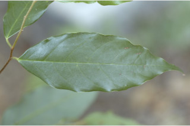
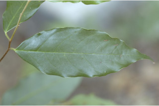

Images :
 



| Habit : | Small trees , up to 6 m tall. |
| Leaves : | Leaves simple , alternate , distichous ; stipule lateral , small, ca. 0.1 cm long, subpersistent ; petiole 0.3-0.5 cm long, planoconvex in cross section, rugose when dry, hairy when young; lamina 7-12 x 2.5-3.3 cm, narrow elliptic to lanceolate , apex long acuminate , base acute , margin entire , glaucous beneath, glabrous ; midrib canaliculate above; secondary_nerves 6-8 pairs; tertiary_nerves broadly reticulate . |
| Inflorescence / Flower : | N/A |
| Fruit and Seed : | N/A |